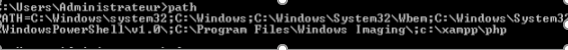
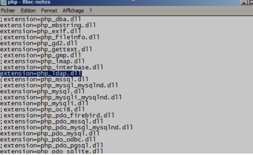
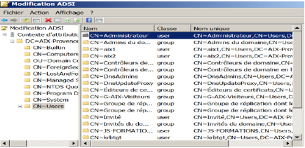

Mise en place de GLPI
Nous sommes partis d’un serveur avec uniquement un AD dans lequel on avait rentré le DNS de GSB, des utilisateurs et un DHCP avec une étendue pour les pcs clients. Afin d’installer GLPI nous avons dû installer Xampp qui est un ensemble de logicielle permettant de mettre en place un serveur wed local un serveur mtp et un serveur de messagerie
Qu’on place dans C: , on devait activer APACHE et mySQL , la 2nd étape consister a installé GLPI 9.4 celui-ci devais être décompresser dans C:\Xampp\HTDOCS la troisième étape était de paramétrer l’interface de GLPI via lien suivant http://localhost:80/GLPI , sur se dernier il faudra sélectionner la langue ensuite saisir identifiant et nom de la base (localhost and root)
On a crée une nouvelle base nommée GSB une fois cela fait l’installation de GLPI est terminer. on a du configurer et l’authentification GLPI via le lien suivant http://addresse ipserver/glpi les identifiant sont l’utilisateur est glpi et le mot de passe est glpi , on va installer le plug in fusion inventory (est un logiciel servant a l’inventaire et la maintenance d’un parc informatique il doit être installer sur les postes et sur les serveurs), on le met dans le répertoire C:\xampp\HTDOCS\GLPI\plugins
Pour vérifier que l’agent est installé on met dans l’URL : http://localhost:63254/
Pour réaliser l’authentification des utilisateurs dans l’annuaire LDAP, il faut d’abord modifier le PATH
 Ensuite il faut retirer dans le ; dans le fichier PHP.ini qui est Xampp:\PHP\PHP.ini L’etape suivante sur GLPI dans les option d’authentification ,configation,puis annuaire LDAP

Pour trouver les chemins base Dn et dn du compte se trouve dans midification\ ADSCI
Nous finissons par amener les utilisateur depuis administration utilisateur annuaire LDAP et cliquer sur importation de nouveau utilisateur et cochez les utilisateurs a importer